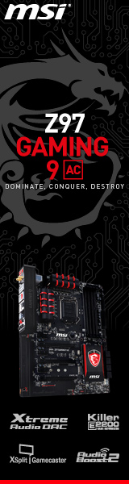

Top 5 open world games for Iphone and Ipad
Oceanhorn
GTA San Andreas
GTA Chinatown Wars
Minecraft
Baldur's Gate
Oceanhorn: Monster of Uncharted Seas
is an action-adventure video game developed by Finnish studio Cornfox & Bros. It focuses on an unnamed boy protagonist's quest to find his lost father and defeat the living fortress, Oceanhorn. It was first released for iOS in November 2013, and later had ports for Android, Microsoft Windows, macOS, PlayStation 4, Xbox One, Nintendo Switch and PlayStation Vita.
The gameplay and graphic design of Oceanhorn closely follows that of The Legend of Zelda video games, notably The Wind Waker and A Link to the Past. Players explore dungeons, fight monsters with various weapons, and throw pots and cut bushes to find hidden coins or hearts. The music of Oceanhorn was composed by Kalle Ylitalo, with a few additional compositions by Kenji Ito and Nobuo Uematsu. A sequel, titled Oceanhorn 2: Knights of the Lost Realm, is in development.
